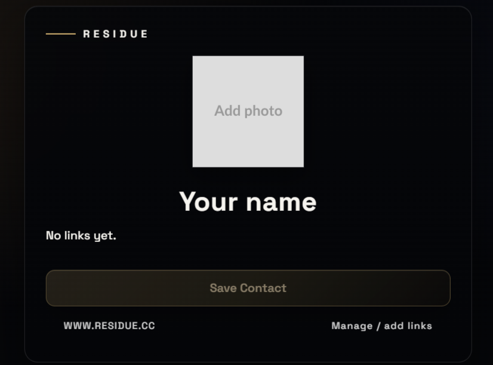
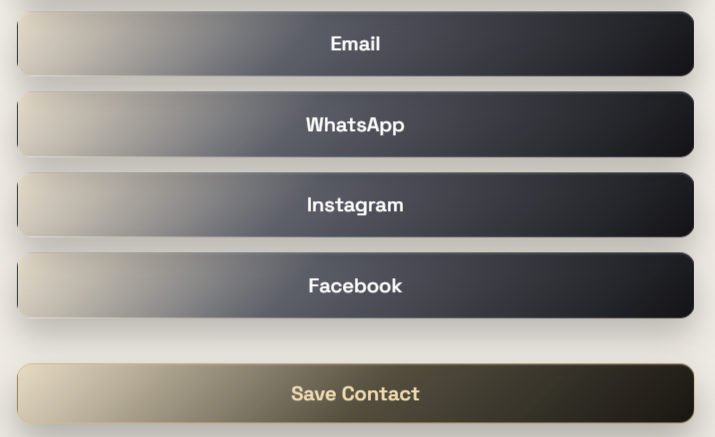
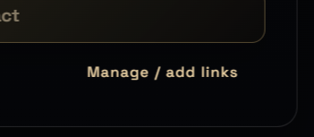
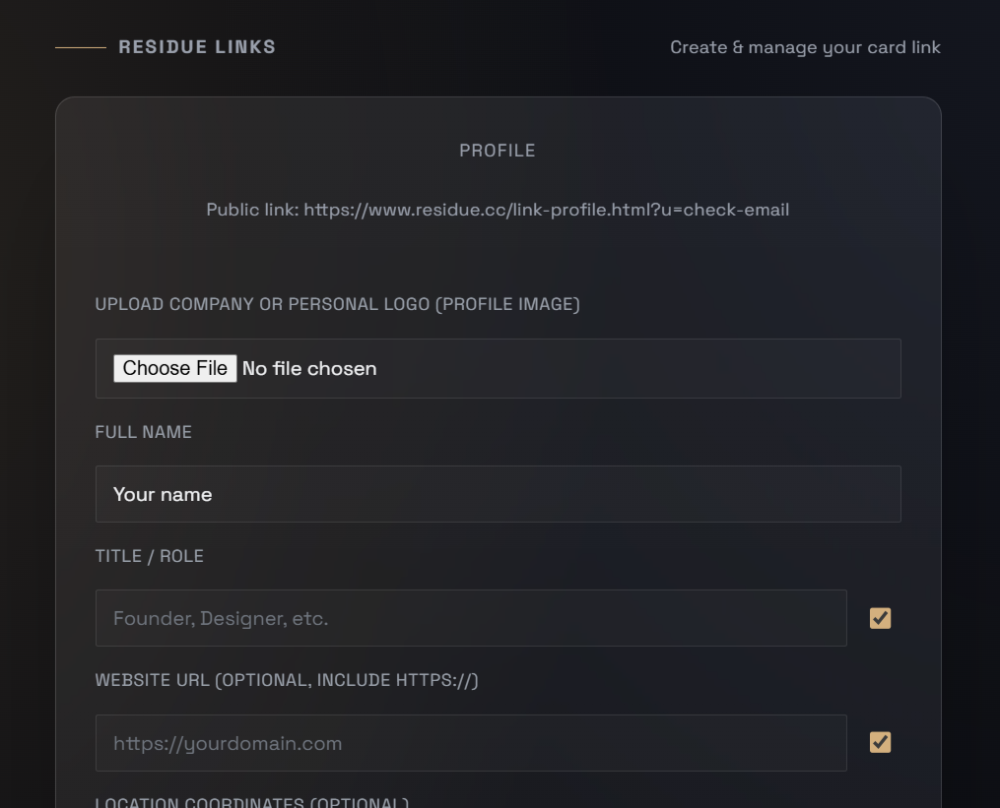
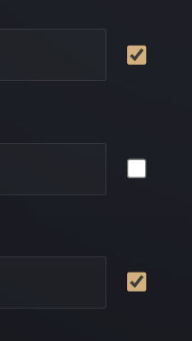
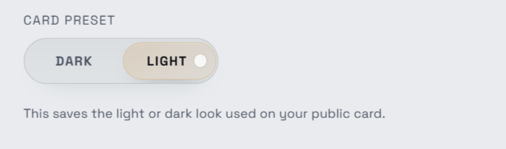
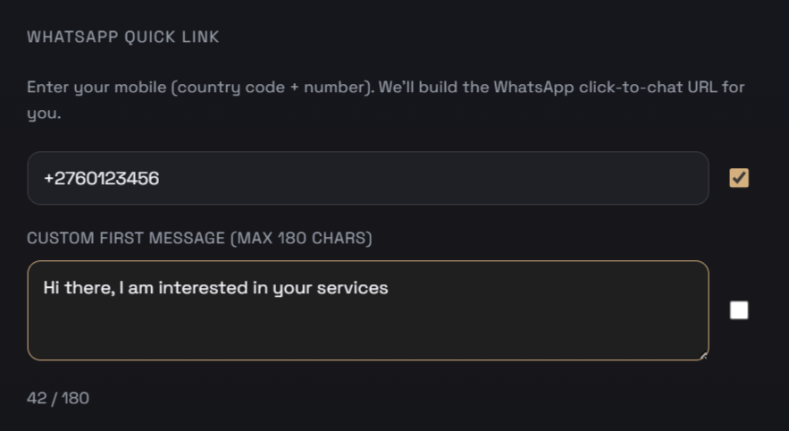
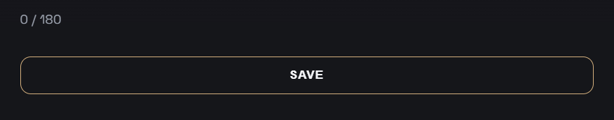

A quick visual guide to what happens when someone taps your card and how you control
the profile experience behind it.
How the Card Works
When your Residue card is tapped against a compatible mobile device, it instantly opens
your personalised digital profile. This page contains your professional details,
contact information, and links — all presented in a clean, elegant interface designed
to represent you with clarity and precision.

Visitors can save your contact details directly to their device with a single tap,
making it effortless for them to keep your information and connect with you later.

Managing Your Card
Each digital profile includes a management option located in the bottom-right corner
of the page. This allows the card owner to access the configuration panel and control
how their profile is presented.

After signing in with your authorised account, you gain access to the card management
dashboard. From here, you can personalise your profile and decide exactly what
information your clients or contacts will see.

You can update your personal information at any time and choose which contact options
are visible by enabling or disabling specific buttons. This allows you to tailor the
experience to suit your professional needs.

The interface also supports both light and dark display modes, ensuring your profile
looks polished and readable in any environment.

For even smoother communication, you can add a preset WhatsApp message that will
automatically appear when someone opens a conversation with you.

Once you have configured your preferences, simply save your settings and your card
will immediately reflect the updated information.

Residue
Open Circulation Window
When active, codes are not required. Supply is still limited.